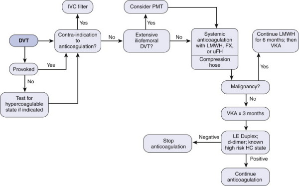

DVT and PE
DEFINITION
DVT / PE.
top D I A B M
I M P home
INCIDENCE
Incidence
High in surgical pts
Maybe still >1% despite optimal preventative measures
Risk Factors
May be related to a proximate event e.g. surgery; or idiopathic.
Past DVT
After a DVT, 1/3 of patients will get a further DVT in the next 10y.
Virchow’s triad
Stasis
Travel, pregnancy, immobilisation
Post-op (mostly preventable)
Obesity; pre-op weight is single greatest factor.
Vessel wall injury
Trauma.
Smoking
Venous catheters etc
Hypercoagulability
Inhererit (primary) thrombophilic conditions are not uncommon and
increase risk 150-400%
- test in patients <50 with unprovoked dvt, unusual VTE sites and
multiple recurrent VTE.
- antithrombin III antigen, factor V Leiden, protein C and S
antigen, Homocysteine
- antiphospholipid (lupus)
- Factor VIII levels
Secondary:
Malignancy (solid>haematological)
Pregnancy / oestrogens, incl. OCP
Chronic disease
Antiphospholipid antibody, factor V Leiden.
And age.
Surgery
Esp pelvic, ortho and abdominal.
Up to 50% are diagnosed 30d after discharge; risk continues well
after discharge, esp if reduced mobility
Therefore many guidelines proposing use of clexane to 4w after
discharge
Higher rates if low albumin, infections, post-operative
complications
- systemic inflammation creates a pro-thrombotic state
Risk Stratification
Basic Outline:
Low
Minor procedures, patients <40
Surgery <30m
Moderate
Major surgery, patients <40y
Minor surgery in pts >40 with risks
High
Major surgery age >60
Major surgery age >40 with risks
Very High
Major spinal or ortho or pelvic surgery
Major surgery and malignancy, prior VTE, hypercoagulable states
In addition, individualised risk assessment relevant to above
factors.
top D I A B M
I M P home
AETIOLOGY
See above.
top D I A B M
I M P home
BIOLOGICAL BEHAVIOUR
Pathogenesis
PE usually begins from a DVT
- more likely if it extends beyond the calves.
- 30% of DVTs cause symptomatic PE
- 60% cause subclinical PE
- probably 100% of people get microemboli.
Clinical effects depend on:
- single or multiple
- acute or chronic
- size
- state of the circulation
Pathophysiology
Respiratory Compromise
Causes hypoxaemia by V/Q disturbance.
Events depend on extent of pulmonary vascular obstruction
- correlates with degree of vasoactive agent release (serotonin,
thromboxane A2)
- RV dilates, may cause pain.
- coronary blood flow reduces as less LV filling occurs
--> may cause angina.
In collapse, as hypoxaemia worsens, leads to asystole or VF.
Haemodynamic Compromise
If 30% of vascular tree occluded.
- less if pre-existing disease.
Natural History
Usually resolves via contraction and fibrinolysis, particularly in
the young.
Unresolved multiple emboli may lead to pulmonary hypertension,
vascular sclerosis and chronic cor pulmonale.
- if a pt has one embolus, they have a 30% chance of having another.
top D I A B M
I M P home
MANIFESTATIONS
Most are silent
Consider also paradoxic stroke through patent foramen ovale
Symptoms
DVT
Swollen tender calf and/ or thigh.
Leg pain
Dilated leg veins, colour change
Can have mild fever.
Chronic DVT changes
Serious compromise to quality of life with significant DVT
Leg pain, aching, swelling
Development of varicosity, lymphoedema in severe cases.
PE
A small one may pass with transient chest pain, cough.
Dyspnoea
Apprehension
Cough (non productive)
Haemoptysis
Pleuritic chest pain
Pulmonary hypertension
Hypoxia.
Massive PE
Sudden-onset dyspnoea
Haemodynamic collapse and sudden death.
Post-op
Pt may simply 'fail to progress' or have 'off-days' as multiple PEs
occur.
Systemic
Fever possible
Sweating
Note
The 'typical' triad of SOB, pleuritic pain and haemoptysis is very
rare
- most signs are non-specific and the diagnosis is difficult
Signs
Suspect chronic PEs in pts with
poor cardiopulmonary performance.
Observe
Cyanosis
Tachypnoea
Respiratory distress.
Increased JVP
R-wave.
Palpate
Tachycardia
RV heave
Auscultation
Wide splitting
P2 increased
S3, S4.
top D I A B M
I M P home
INVESTIGATIONS
ABG
Hypoxia
PaCO2 may be high, normal or low
--> this depends on the severity.
Metabolic acidosis if severe
ECG
Normal in 50%
sinus tachy = most common feature
RAD
R-wave dominant in V1
ST depression
T inversion (III, V1-V3).
Occasional S1, Q3, T3 pattern.
--> seen in only 25% of even massive PEs
P-pulmonale
RBBB and atrial arrythmias.
Biochem
Duplex ultrasound of leg and thigh.
D-dimer (ELISA)
--> high negative predictive value, but positive result is
non-specific.
Imaging
CXR
- usually of no use early unless excluding other problems.
- may be signs (perhaps subtle) after 12-36 hrs in 50%:
--> atelectasis and pleural effusion in 50%
--> wedge-shaped peripheral infiltrates.
--> pulmonary haemorrhage
--> local collapse, effusion or diaphragmatic elevation.
CTPA
- test of choice: sensitive, specific, safe.Echo (TOE)
- right heard dilation or septal shift to left
- may show the embolus itself.
V/Q scan
- second choice test; reserved for iodine allergy or impaired renal
fx.
- given technetium labelled gas to breathe and technetium labelled
albumin IV
- normal will exclude PE, abnormal won't.
- most scans are indeterminate.
MRI
- may be as specific as angiography
Echo
- useful bedside test in hemodynamically compromised pt
- ventricular fx, effusions, tamponade, hypokinesis
top D I A B M
I M P home
MANAGEMENT
Prevention
Refer DVT Prophylaxis.
Air travel - role of aspirin unclear, non-proven measures include
hydration and exercise.
Recurrent VTE - life-long anticoagulation ± IVC filt
DVT
Use compression stockings
- decreases venous congestion; improved vein recovery
- no added risk of milking DVT to cause PE

(VKA = warfarin); target 2-3
- 6-12w ok for only calf-level dvt
- alternative is long-term LMWH which may allow improved
recanalization rates
- risk of major bleeding 6% per year.
Before stopping warfarin:
- duplex USS to detect for residual thrombus
- better validated = d-dimers 1m after warfarin ceased.
LMWH dose = 1mg/kg bd
Begin warfarin when therapeutic anticoagulation in place
Complicated DVT
May need pharmacomechanical thrombus clearance procedures, e.g.
limb-threatening phlegmasia cerulia / alba dolens
- and particularly for axillary or subclavian thrombosis in young
More likely to succeed if undertaken at <14d
Catheter-directed thrombolysis
Modern agents
Dabigatran = oral direct thrombin inhibitors
Rivaroxaban = oral factor Xa agents
... no direct antidotes
Vena Cava Filters
If complications, contraindications, or failure
- increasingly for trauma pts who cannot undergo serious
anticoagulation.
- e.g. quadraplegia, severe head injury,
Softer indications include floating thrombus tail >5cm, or
v. high PE risk.
Cone shaped, wire-based, permanent or retrievable device
- placed at L2/3 level, infrarenal and T12/L1 for suprarenal
placement
- under radiographic guidance using Saldinger techniques
Misplacement will compromise efficacy
Filter migration is uncommon, but may tilt.
Device failure in 2-5%
Most feared complication is caval occlusion
- either due to large thrombus trapping (acute) or ingrowth (late)
Infections occur, but are related to the thrombus inside the filter,
not the filter; treated as for any intravascular infection
Massive PE (Shock)
Undertake treatment before sure diagnosis.
1. Check pulse
- As for adult collapse management if pulse absent
--> likely inneffective, but may break up a saddle embolus and
get some flow going.
--> urgent thrombectomy or thrombolysis
2. High flow O2 - obtain best possible sats.
- Consider intubation and IPPC with 5cm PEEP.
3. Saline, rapid 500-1000 bolus.
4. Adrenaline 1-2ml increments (1:10,000) for treating bradycardia
and BP
5. Bronchodilator (salbutamol 5mg nebule) O2 driven.
- consider a pulmonary vasodilator
6. Once stable, anticoagulate with heparin (15-20,000 iu)
- if still unstable, early thrombolytic therapy with reteplase
quickly with specialist input.
- if contraindicated, urgent pulmonary embolectomy is required.
Thrombolytics?
Indicated for substantive PE: tPA
Alternative is pulmonary thrombectomy...
Anticoagulation
As above.
Generally LMWH SC 1mg/kg BD, followed by oral warfarin on the first
or second day (aim for INR 2.5).
HIT
Heparin-dependent antibody immunoglobulin binds and activates
platelets, causing thrombocytopaenia and thrombosis
Us 3-14d after heparin
Suspect if 50% drop in platelets, or when thrombosis occurs during
heparin therapy
ELISA for the antibody
Stop heparin, change anticoagulants, and when active, start heparin.
top D I A B M
I M P home